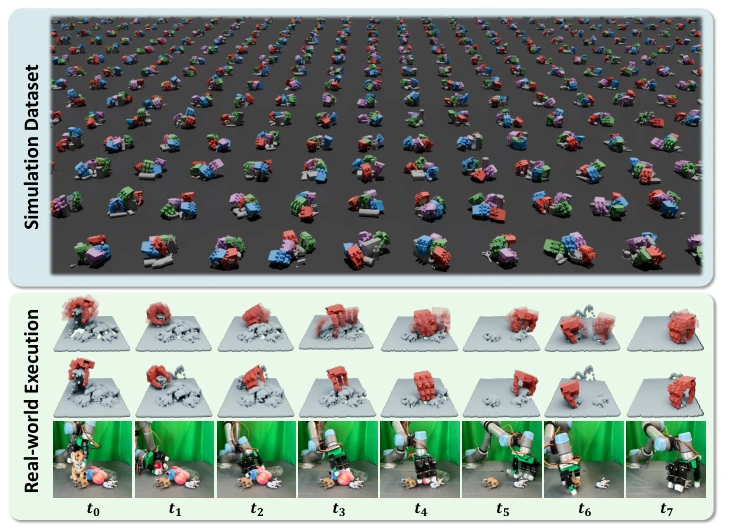
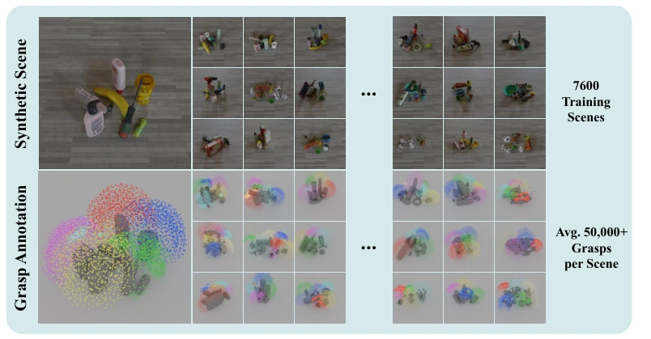
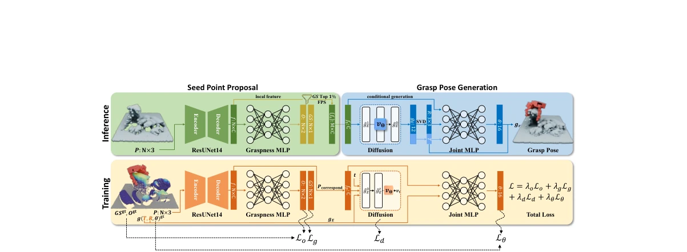
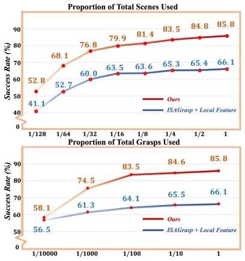
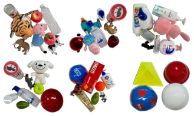
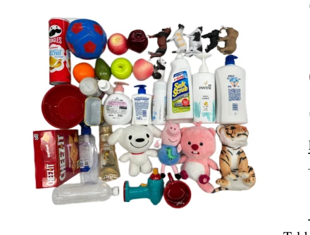
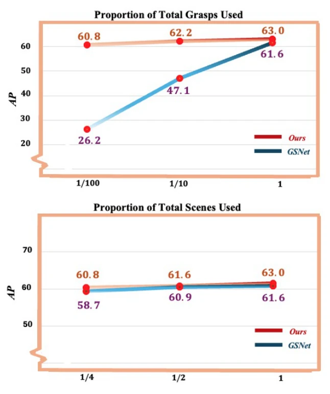
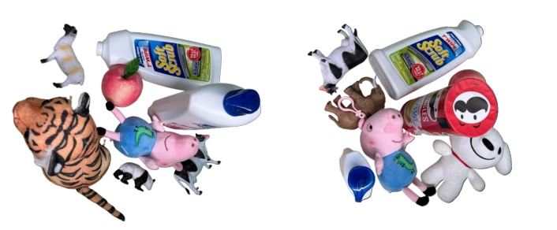
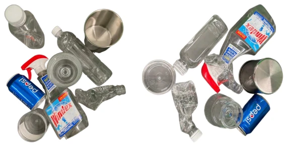
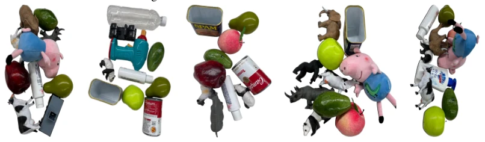

This paper prescribes a potent remedy for the 'data hunger' of dexterous hand grasping in cluttered scenes. DexGraspNet 2.0 directly releases 427 million grasp labels, the scale is indeed shocking, more focused on cluttered scenes than previous DexGraspNet [1] and GraspNet-1Billion [14]. Methodologically, it implements a diffusion-model-based generative framework, combined with local feature conditioning, which indeed handles multimodal distributions better than pure regression [8]. The most striking feature is the 90.7% real-world success rate, appearing quite promising, and it uses depth recovery [13] to bridge the sim-to-real gap. However, do not be too optimistic, open-loop control is destined to fail in dynamic scenes, and the strategy is merely a simple 'pick-lift', failing when encountering thin object flipping or severe occlusion, fingers too thick also cannot grasp small objects. This counts as 'brute-force aesthetics in static scenes', dynamic interaction still needs to endure, after all without tactile feedback, encountering complex occlusion still relies on luck.
Dexterous hand grasping on single objects has already become highly competitive [1, 2], but breaks down once it comes to cluttered scenes. Existing datasets are either too small [6], or objects are placed too sparsely [7, 8], even relying on brute-force search [6, 8], leading to poor algorithm generalization. Regression methods easily converge to the mean, causing penetration or inaccurate contact [8]. Global feature conditioning has low generalization efficiency [11, 12]. Need large-scale synthetic data + generative models capable of handling complex distributions. Especially scene diversity is more important than object diversity, but existing work hasn't clarified this scale requirement, leading to generalization failure on unseen scenes.

Figure 1: Overview. Simulation Dataset: DexGraspNet 2.0 contains 427M grasps (4 random grasps are visualized in each scene here for clarity). Real-world Execution: first row are model- generated grasps conditioned on real-world single-view depth point clouds, second row are top- ranked grasps, and third row are real-world executions.

Figure 2: DexGraspNet 2.0 Benchmark includes 7600 training scenes and an average of 50k+ grasps per scene, totaling 400M+ grasp labels. The images at the same position in the first and second row correspond to the same scene. Each colored point in the second row represents the palm position of a grasp label, with different colors indicating grasp poses on different objects. For simplicity, grasp labels in each scene are downsampled to 1000.
Overall, it is a two-stage architecture. Stage 1 Seed Point Proposal, uses ResUNet14 to extract local features from single-view depth point clouds, predicts graspness and segmentation, selects Top 1% points as seeds. Stage 2 Grasp Pose Generation, uses Diffusion model to predict wrist pose (T, R) conditional distribution, because (T, R) is multimodal; joint angles θ use MLP deterministic prediction, because assumed unimodal. This decomposed modeling avoids Euclidean space and SO(3) incompatibility. During training, jointly optimize segmentation, graspness, diffusion denoising and joint angle loss. During inference, combine log-likelihood and graspness scoring ranking. Diffusion process converts Gaussian noise to valid pose through iterative denoising, finally uses SVD projection back to SE(3).

Figure 3: Method architecture. Our method leverages a generative model conditioned on local fea- tures and models the distribution of grasp poses (T,R,θ) in a decomposed way. Inference: The model receives a single-view depth point cloud and generates multiple grasps (only one is visualized). Train- ing: The model takes the depth point cloud and ground-truth annotations to learn data distribution.
Dataset contains 1319 objects, 8270 scenes, 427 million grasps. Simulation testing on DexGraspNet 2.0 and GraspNet-1Billion [14]. Baselines include HGC-Net [8], GraspTTA [11], ISAGrasp [5]. On DexGraspNet 2.0 reaches 90.6% success rate, far exceeding regression methods. Physical robot testing uses LEAP hand [9] and UR-5, with depth recovery [13], reaches 90.7% success rate. Ablation shows local features better than global, decomposed modeling better than joint modeling. Scaling experiments show scene diversity more important than object diversity, and generative methods perform better with data volume growth, regression methods easily plateau.

Figure 4: Scaling the number of scenes/grasps.

Figure 6: Real-world experiment scenes.

Figure 5: Real-world experiment objects.
其他图片Other Figures

Figure 7: AP metric evaluated on models trained with downscaled dataset. Top: downscaling the number of grasp labels in each scene. Bottom: downscaling number of scenes trained on

Figure 8: Two Diffuse scenes in real world.

Figure 9: Two Trans scenes in real world.

Figure 10: Five Normal test scenes for gripper in the main paper.